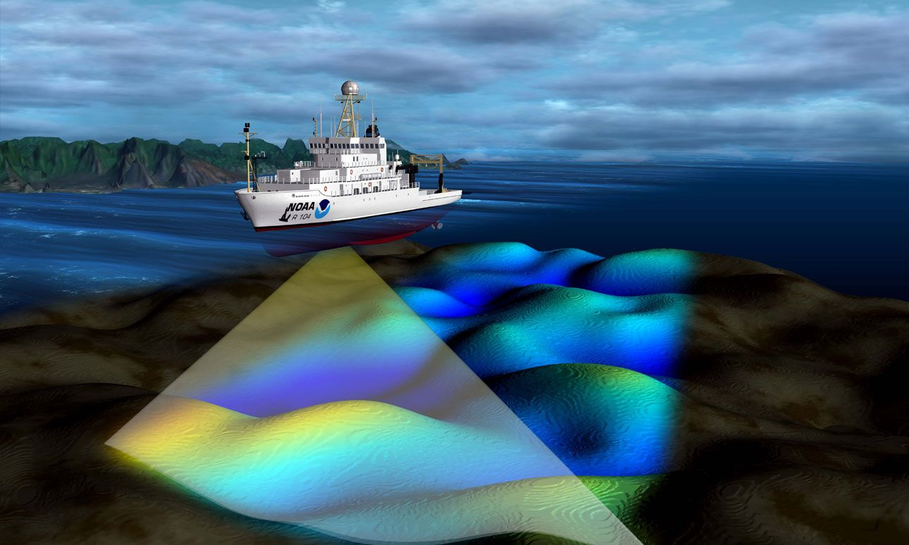
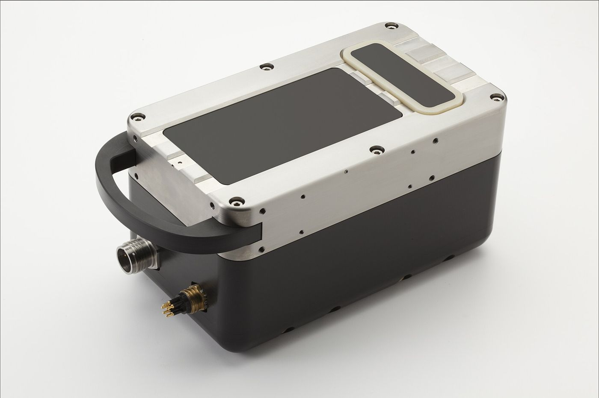
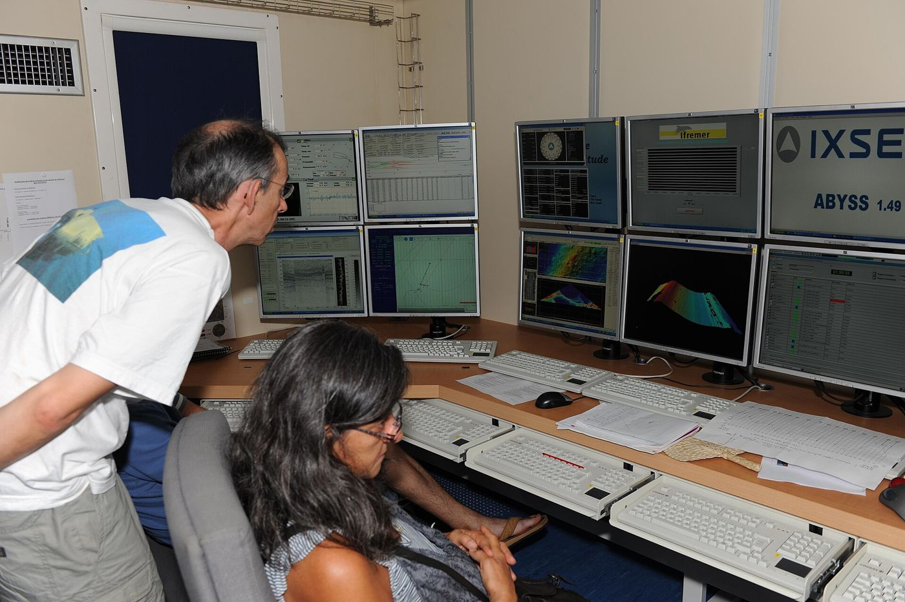

Deniz tabanının yüksek çözünürlüklü 3D haritalaması için gelişmiş çok ışınlı hidrografik ölçüm sistemi.
Ekipman · BatimetriZT · 2007'den beri
Deniz tabanının yüksek çözünürlüklü 3D haritalaması için gelişmiş teknoloji

Görsel: NOAA · Kamu malı (Wikimedia Commons)

Görsel: Mredmayne · CC BY-SA 3.0 (Wikimedia Commons)

Görsel: S. Lesbats / Ifremer · CC BY 4.0 (Wikimedia Commons)
Multi Beam Ekolot Nedir?
Multi Beam Ekolot, deniz tabanının detaylı haritalaması için kullanılan gelişmiş bir hidrografik ölçüm sistemidir. Tek bir ölçümde geniş bir alanı tarayarak, deniz tabanının yüksek çözünürlüklü 3D haritasını oluşturur. Bu teknoloji, geleneksel single beam ekolotlara göre çok daha hızlı ve detaylı veri toplama imkanı sağlar.
Teknik Özellikler
Çoklu Işın Sistemi: Aynı anda 256-512 adet ses dalgası göndererek geniş alan taraması yapar
Yüksek Çözünürlük: 1-5 cm hassasiyetle derinlik ölçümü
Geniş Tarama Açısı: 120-150° açı ile kapsamlı alan taraması
Gerçek Zamanlı Veri: Anlık veri işleme ve görselleştirme
GPS Entegrasyonu: Hassas konumlandırma ve navigasyon
Dalga Düzeltmesi: Deniz koşullarına göre otomatik düzeltme
Kullanım Alanları
Denizcilik ve Navigasyon
Deniz haritaları oluşturma
Güvenli navigasyon rotaları
Tehlike tespiti ve işaretleme
Liman ve marina planlaması
Mühendislik Projeleri
Deniz altı boru hattı güzergahı
Köprü ve tünel temel etüdü
Offshore platform yerleşimi
Deniz dibi kablolama projeleri
Bilimsel Araştırmalar
Deniz tabanı jeolojisi
Deniz canlıları habitatı
Arkeolojik su altı araştırmaları
Deniz tabanı değişim analizi
Çevre ve Güvenlik
Deniz kirliliği tespiti
Batık gemi arama
Deniz güvenliği operasyonları
Kıyı erozyonu takibi
Avantajları
Hız: Geleneksel yöntemlere göre 10-20 kat daha hızlı veri toplama
Hassasiyet: Yüksek çözünürlüklü ve doğru ölçümler
Kapsamlılık: Geniş alanları tek seferde tarama
Maliyet Etkinliği: Daha az zaman ve kaynak kullanımı
Güvenlik: Tehlikeli alanları önceden tespit etme
Veri Kalitesi: Yüksek kaliteli 3D görselleştirme
Teknik Veriler
Özellik
Değer
Frekans Aralığı
200-400 kHz
Maksimum Derinlik
1000 metre
Işın Sayısı
256-512
Tarama Açısı
120-150°
Hassasiyet
±1-5 cm
Veri Hızı
50 Hz
Proje Örnekleri
İstanbul Boğazı Batimetrik Haritalaması
İstanbul Boğazı'nın tam batimetrik haritalaması yapılarak, güvenli navigasyon rotaları belirlendi ve deniz trafiği için kritik noktalar tespit edildi.
2023
Karadeniz Doğal Gaz Boru Hattı
Karadeniz'de doğal gaz boru hattı güzergahının detaylı deniz tabanı analizi yapılarak, en uygun rota belirlendi.
2022
Neden Zemin Teknik?
Zemin Teknik olarak, Multi Beam Ekolot teknolojisinde 15 yılı aşkın deneyimimizle, Türkiye'nin önde gelen hidrografik ölçüm firmalarından biriyiz. Uzman ekibimiz ve modern ekipmanlarımızla, en hassas ve detaylı deniz tabanı haritalaması hizmeti sunuyoruz.
Uzman Teknik Kadro
Modern Ekipman
Hızlı Teslimat
7/24 Teknik Destek
Teklif & danışma
Bu konuda teklif veya teknik görüş almak ister misiniz?
Sahanızı ve hedeflerinizi anlatın; uzman ekibimiz ekipman, süre ve maliyet içeren net bir teklif hazırlasın.